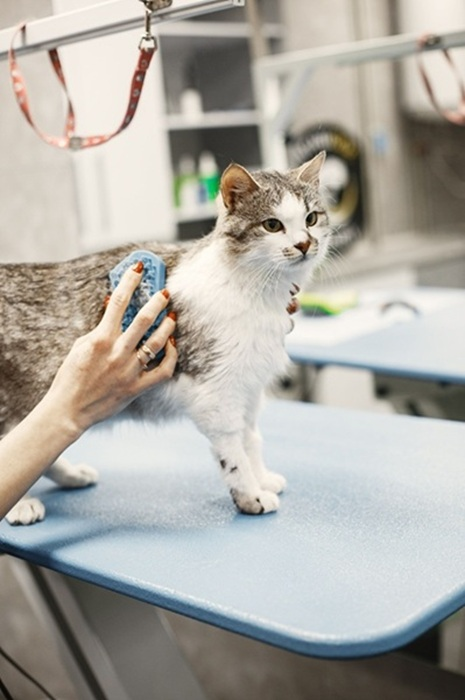

About Us
Our Story as an Experienced Pet Grooming Team
Clementine's Pet Spa & Grooming has proudly served the community for more than eight years. As professional pet groomers, our passion is providing personalized care in a welcoming, stress-free environment where every pet is treated like family. Founded by lifelong animal lover Leah Nau, our salon was built on the belief that every pet deserves compassionate attention and quality grooming tailored to their individual needs.
Our experienced pet grooming team provides bathing, brushing, nail trimming, coat care, and other grooming services for both dogs and cats. We focus on creating a calm experience that helps pets feel safe while giving owners confidence that their companions are receiving exceptional care. Our goal is to create a positive experience that leaves every pet happy, healthy, comfortable, and excited to return for future visits.
Our Commitment
Our commitment goes beyond grooming. We strive to build lasting relationships with pet owners by providing trusted pet care, maintaining a clean and safe environment, and treating every pet with patience, kindness, and respect.
- Compassionate pet care.
- Experienced and certified groomers.
- Safe, clean, and stress-free environment.
- Award-winning customer service.
- Personalized attention for every pet.
